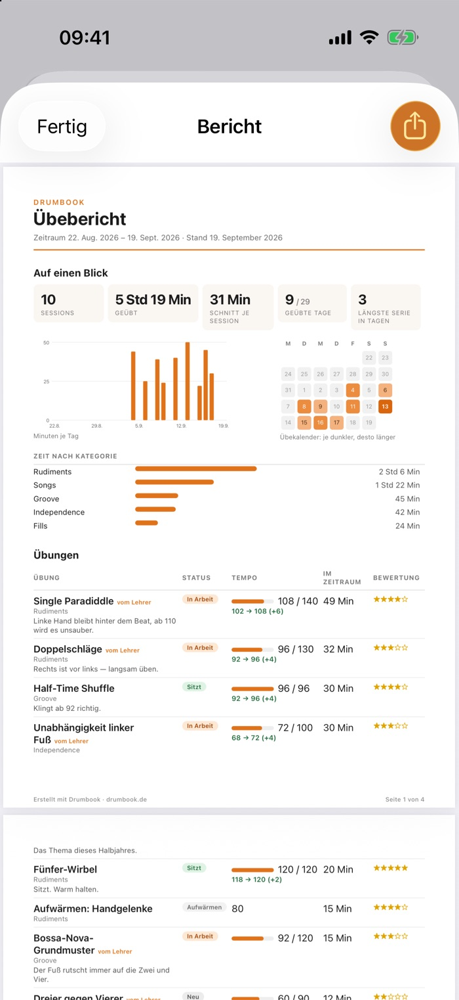

Für Schlagzeuglehrer
Wissen, was Ihre Schüler zu Hause üben.
Ihre Schüler führen in Drumbook ihr Übetagebuch. Zur Stunde bringen sie einen Bericht mit: wie viel geübt wurde, in welchem Tempo, und was liegen blieb. Sie selbst brauchen dafür weder App noch Konto.
Was Sie zur nächsten Stunde in der Hand halten
Einen Bericht als PDF, den der Schüler mit zwei Tipps erzeugt, wahlweise genau für den Zeitraum seit Ihrer letzten Stunde.
- Seite 1 in zwanzig Sekunden: geübte Tage, längste Serie, ein Übekalender, die Zeit nach Kategorie. Ob mit Lücken geübt wurde, sehen Sie, bevor Sie lesen.
- Ist- und Zieltempo nebeneinander: „96 von 130, von 92 gekommen“ sagt in einer Zeile, was zehn Minuten Nachfragen nicht ergeben. Was Sie aufgegeben haben und liegen blieb, steht ebenfalls da.
- Die Notizen des Schülers: „Ab 100 kippt es ins Gedrückte“. Genau da setzen Sie die Stunde an.
- Jede Übesession mit Datum, Dauer und Übung, dazu je Übung die Selbsteinschätzung. Songs bleiben draußen: Der Bericht zeigt, was geübt wurde, nicht, was nebenbei lief.

Ihre Aufgaben überdauern die Woche
Was Sie aufgeben, trägt der Schüler samt Ihrer Einschätzung ein. Diese Übungen kommen in seiner Übeliste zuerst. Der Satz, auf den es ankam, steht am Mittwoch noch da.
Schüler kommen mit Fragen
Was beim Üben unklar wird, sammelt die App. In der nächsten Stunde stehen die Fragen oben auf dem Bildschirm, und Sie beginnen mit drei konkreten Punkten statt mit Suchen.
Für Sie ohne Aufwand
Sie brauchen kein iPhone und richten nichts ein. Den Bericht bekommen Sie ausgedruckt oder per Mail. Die Übedaten liegen beim Schüler, auf seinem Gerät und in seiner iCloud; was Sie sehen, gibt er Ihnen selbst.
Gut zu wissen
Drumbook ist das Übetagebuch eines Schülers, keine Plattform für eine ganze Musikschule. Eine Übersicht über mehrere Schüler gibt es deshalb nicht. Gebaut hat es eine Person, die selbst Schlagzeug lernt; gerade läuft der Test über TestFlight, Apples eigene App für Testfassungen. Was fertig ist und was noch kommt →
Material für Ihren Unterricht.
Ein A5-Zettel zum Ausdrucken und Mitgeben: was Drumbook ist, wie der Schüler hineinkommt, und ein QR-Code, der direkt zur Einladung führt. Dazu diese Seite als Blatt, falls Sie Kollegen davon erzählen wollen.
Selbst ansehen.
Probieren Sie Drumbook aus, bevor Sie es empfehlen. Mit einem iPhone oder iPad geht das kostenlos über TestFlight. Tragen Sie Ihre Adresse ein, und Sie bekommen eine Einladung. Das ist die einzige Mail von mir, danach lösche ich die Adresse.
Meine Schüler sind minderjährig. Was ist mit dem Datenschutz?
Drumbook hat keine Anmeldung und keinen eigenen Server. Die Übedaten liegen auf dem Gerät des Schülers und in seiner eigenen iCloud. Weder Sie noch ich sehen etwas davon, solange der Schüler Ihnen nicht selbst den Bericht gibt. Datenschutz im Detail →
Was kostet Drumbook für meine Schüler?
Während des Tests nichts. Wenn Drumbook im App Store ist, wird es ein Abo für 3 bis 5 € im Monat, im Jahr deutlich günstiger, mit allen Funktionen und ohne Werbung.
Was ist mit Schülern, die ein Android-Handy haben?
Drumbook gibt es zuerst für iPhone und iPad. Android ist geplant, ein Datum gibt es noch nicht.
Muss ich im Unterricht etwas anders machen?
Nein. Sie geben auf wie immer, der Schüler trägt es ein. Was sich ändert: Er kommt mit einem Bericht und mit Fragen in die Stunde.